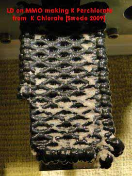

Potassium Perchlorate has no known hydrates and is not hygroscopic.
The solutions of NaClO4 and KCl should be neutral for the following. If they are not you should neutralise them by adding a small amount of KOH or NaOH. If you don't do this small traces of acid are introduced into the final product which may be very dangerous with Sulphur etc.
Potassium Perchlorate is usually made by double decomposition of KCl and Sodium Perchlorate. The Potassium Perchlorate is not very soluble and will ppt out immediately as a very fine crystalline product (your solution will look like yogurt if you add the KCl quickly) as soon as you add the KCl to the Sodium Perchlorate. There is a Delta T associated with this metathesis reaction. The solution containing the precipitated K Perchorate will be warmer than the starting solutions by about 22°C.
If you are using Sodium Perchlorate solution from a cell there will be some Sodium Chlorate present in the electrolyte and it should be borne in mind that you will get some Chlorate contamination of your product. A Perchlorate product that is contaminated with Chlorate should be treated the same as if you had Chlorate when it comes to mixing with Sulphur or other combustibles that are dangerous with Chlorate. If you want pure K Perchlorate you must destroy all of the Sodium Chlorate present in the Sodium Perchlorate by chemical means and then use the pure Sodium Perchlorate to make Potassium Perchlorate. You may be able to clean it up by recrystallization but it is a laborious task. You can check for the presence of Chlorate by using a sensitive test or use an excess of chemicals to by sure that all Chlorate is gone.
See Destroying Chlorate by chemical means
You can also make Potassium Perchlorate by decomposition of K Chlorate, it is quite a good way to make the stuff and AFSIK it will not be contaminated with K Chlorate so long as you heat to the correct temperature and hold at that temperature for the correct amount of time. The KCl (byproduct) will be easy to remove from the Perchlorate. See Wouters page.
Potassium Perchlorate can also be made by electrolyzing Potassium Chlorate in a similar manner to that used for Sodium Chlorate. The solubility of Potassium Chlorate is low and the concentration of Chlorate in the cell will be low and you will have to use large volumes of solution if you want large weights of product. The Perchlorate will ppt out as it is formed and will encrust the Anode somewhat. You will have to be careful and make sure that your finished product has all Chlorate removed. There is not much information regarding the manufacture of K Perchlorate via electro synthesis in the literature. Some have suggested that it is erosive on Lead Dioxide Anodes but this does not seem to be true as shown by Swede who has make Potassium Perchlorate directly from Potassium Chlorate using a LD Anode. K Perchlorate was inclined to stick to the Anode but did not seem to interfer with the process. Most of the Perchlorae deposited on the cell bottom. How low the final Chlorate level was I do not know, but it would be easy enough to wash solid K Perchlorate to a very low Chlorate level. A picture of the Anode is below.

| Some useful data | ||||
|---|---|---|---|---|
| KCl | KClO4 | NaCl | NaClO4 | |
| Molecular weight | 74.5 | 138.5 | 58.5 | 122.5 |
Other compounds may be used instead of KCl, for example K sulphate and K Nitrate but if you use the Chloride the by product is NaCl which can be fed back into the recrystallizing stage. It is better to feed back this solution to the recrystallization stage as opposed to the Sodium Chlorate cell. If you feed it back to the cell you may get K Chlorate being precipitated and it is hard to clean up the K Chlorate from cell discoloureds. It is not critical though.
See also Production of Potassium Perchlorate (pdf, 222k).
HIT THE BACK BUTTON ON YOUR BROWSER